Photo Gallery
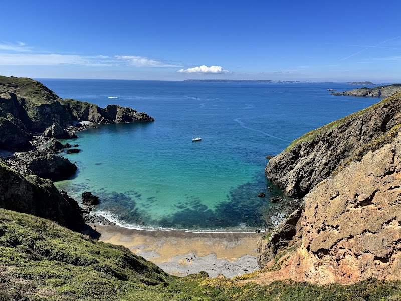 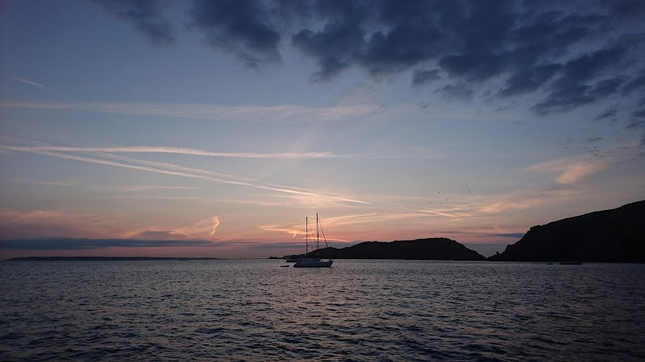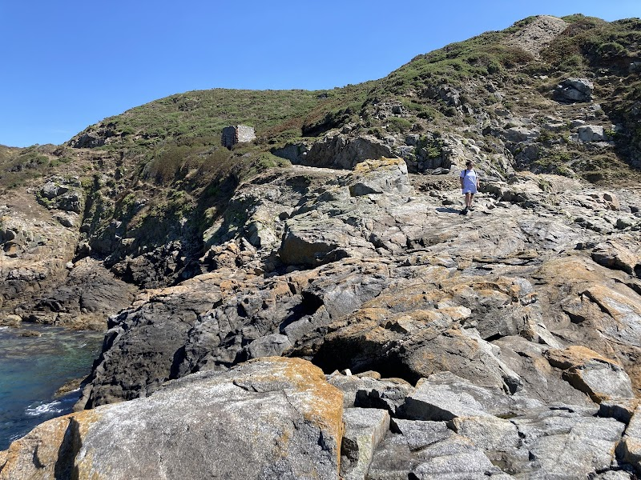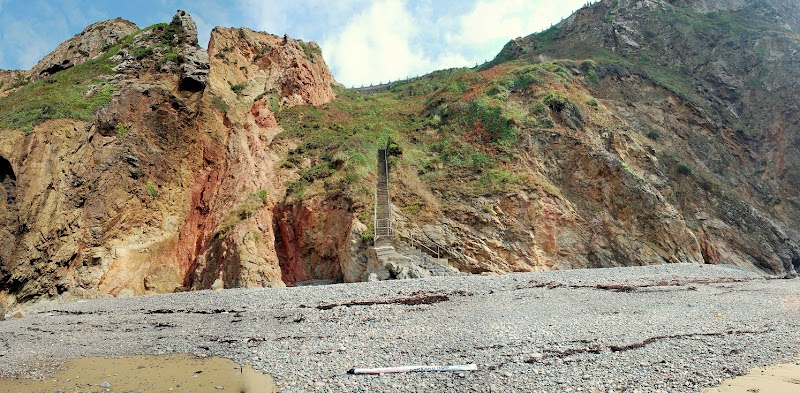
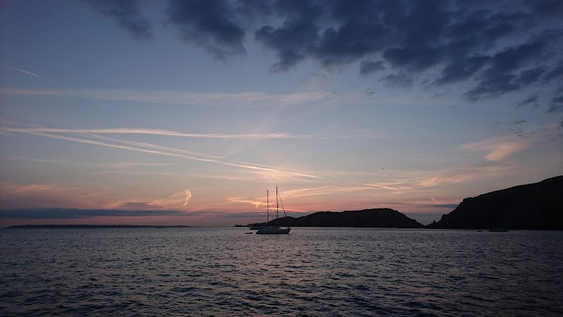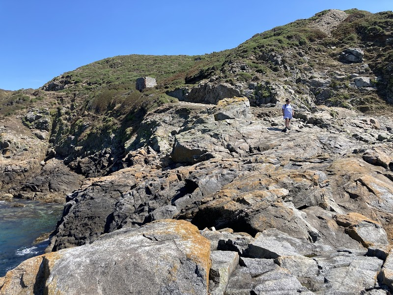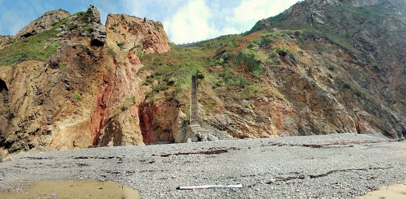
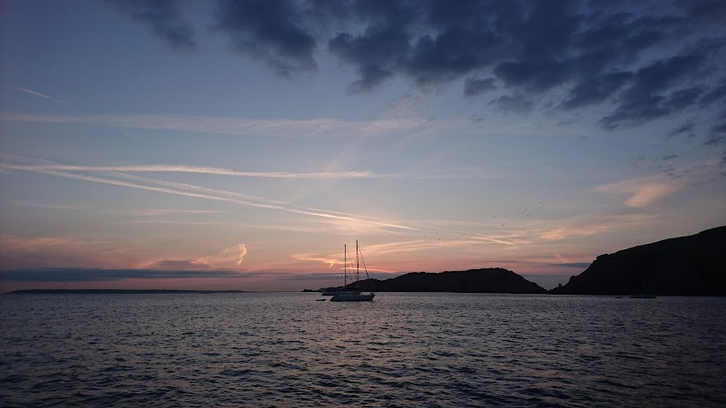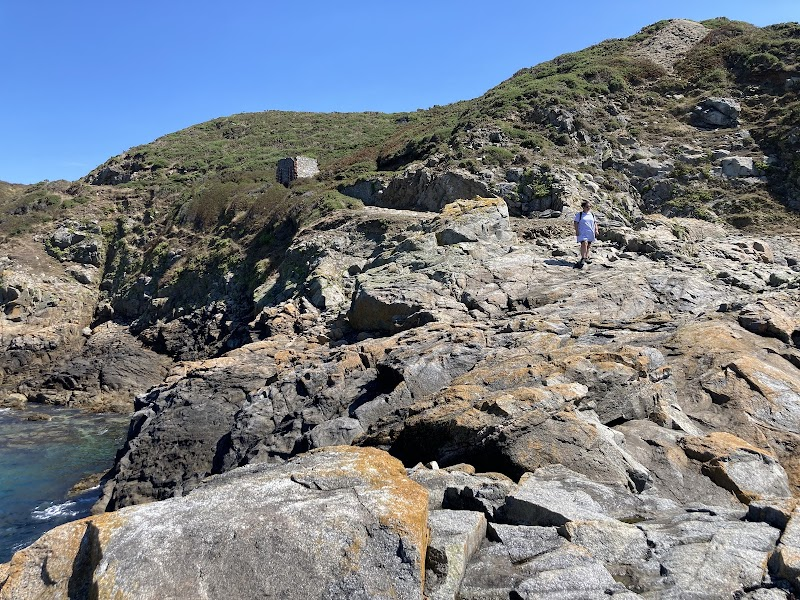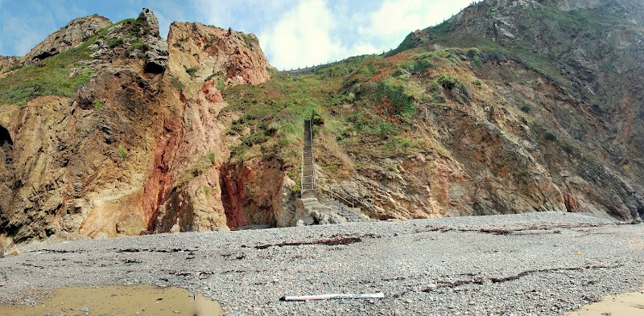A stunning crescent of golden sand on Sark's east coast, accessible only by foot or boat, offering tranquility away from the modern world.
La Grande Greve represents the ultimate escape. Located on Sark, the smallest of the four main Channel Islands, this beach requires effort to reach - and that's precisely why it's special. No cars, no crowds, just pristine sand and crystal-clear water.
Sark itself is unique: Europe's last feudal state until 2008, still car-free today. Visitors arrive by boat from Guernsey, then travel by tractor-drawn ambulance, bicycle, or foot. La Grande Greve lies at the bottom of steep cliffs on the island's east coast.
Reaching the beach requires navigating 100+ steps cut into the cliff. The path is steep and not suitable for those with mobility issues. But the reward: a crescent of golden sand backed by high cliffs, often completely empty even in August.
Without cars, street lights, or crowds, Sark operates on a different rhythm. La Grande Greve exemplifies this. Time your visit for mid-day when the sun illuminates the cliffs. Bring a picnic - there are no facilities here. The water clarity is exceptional, visibility often exceeding 10 meters.
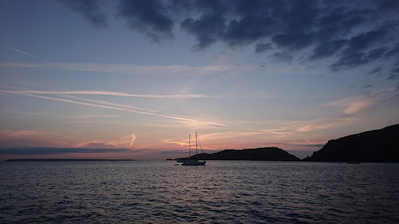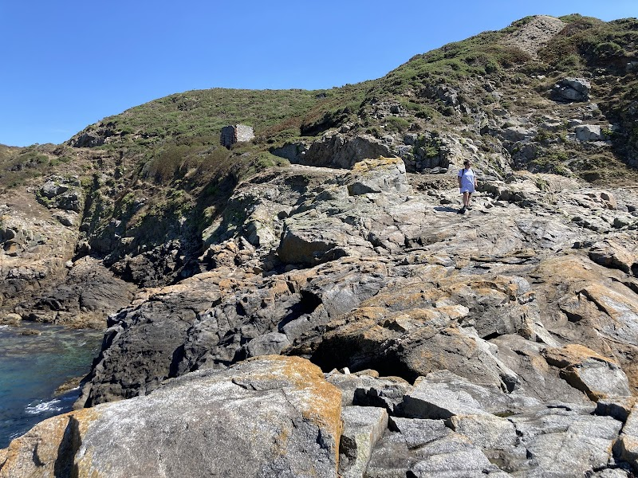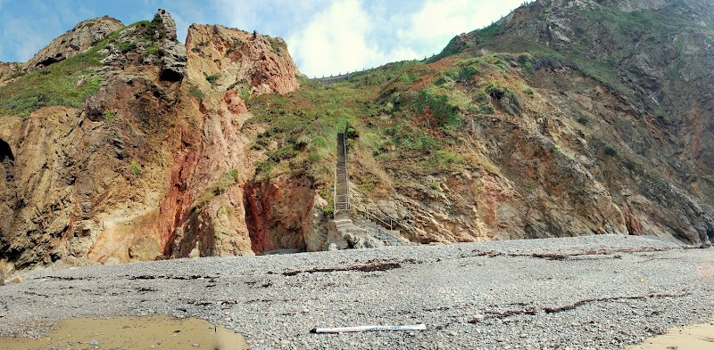